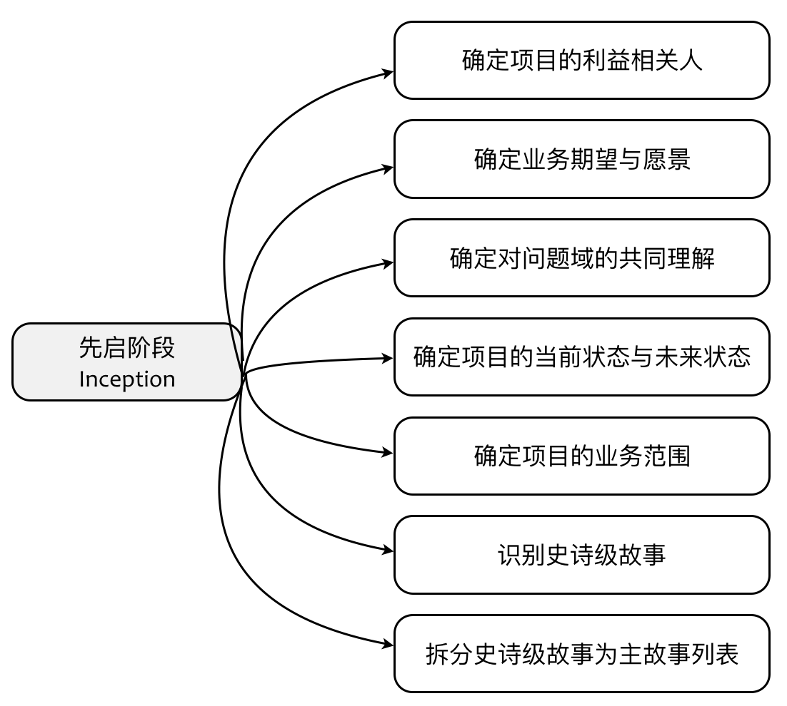
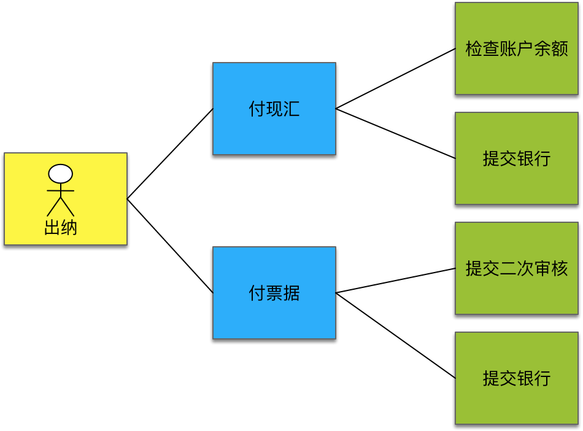

- 001 「战略篇」访谈 DDD 和微服务是什么关系？.md
- 002 「战略篇」开篇词：领域驱动设计，重焕青春的设计经典.md
- 003 领域驱动设计概览.md
- 004 深入分析软件的复杂度.md
- 005 控制软件复杂度的原则.md
- 006 领域驱动设计对软件复杂度的应对（上）.md
- 007 领域驱动设计对软件复杂度的应对（下）.md
- 008 软件开发团队的沟通与协作.md
- 009 运用领域场景分析提炼领域知识（上）.md
- 010 运用领域场景分析提炼领域知识（下）.md
- 011 建立统一语言.md
- 012 理解限界上下文.md
- 013 限界上下文的控制力（上）.md
- 014 限界上下文的控制力（下）.md
- 015 识别限界上下文（上）.md
- 016 识别限界上下文（下）.md
- 017 理解上下文映射.md
- 018 上下文映射的团队协作模式.md
- 019 上下文映射的通信集成模式.md
- 020 辨别限界上下文的协作关系（上）.md
- 021 辨别限界上下文的协作关系（下）.md
- 022 认识分层架构.md
- 023 分层架构的演化.md
- 024 领域驱动架构的演进.md
- 025 案例 层次的职责与协作关系（图文篇）.md
- 026 限界上下文与架构.md
- 027 限界上下文对架构的影响.md
- 028 领域驱动设计的代码模型.md
- 029 代码模型的架构决策.md
- 030 实践 先启阶段的需求分析.md
- 031 实践 先启阶段的领域场景分析（上）.md
- 032 实践 先启阶段的领域场景分析（下）.md
- 033 实践 识别限界上下文.md
- 034 实践 确定限界上下文的协作关系.md
- 035 实践 EAS 的整体架构.md
- 036 「战术篇」访谈：DDD 能帮开发团队提高设计水平吗？.md
- 037 「战术篇」开篇词：领域驱动设计的不确定性.md
- 038 什么是模型.md
- 039 数据分析模型.md
- 040 数据设计模型.md
- 041 数据模型与对象模型.md
- 042 数据实现模型.md
- 043 案例 培训管理系统.md
- 044 服务资源模型.md
- 045 服务行为模型.md
- 046 服务设计模型.md
- 047 领域模型驱动设计.md
- 048 领域实现模型.md
- 049 理解领域模型.md
- 050 领域模型与结构范式.md
- 051 领域模型与对象范式（上）.md
- 052 领域模型与对象范式（中）.md
- 053 领域模型与对象范式（下）.md
- 054 领域模型与函数范式.md
- 055 领域驱动分层架构与对象模型.md
- 056 统一语言与领域分析模型.md
- 057 精炼领域分析模型.md
- 058 彩色 UML 与彩色建模.md
- 059 四色建模法.md
- 060 案例 订单核心流程的四色建模.md
- 061 事件风暴与业务全景探索.md
- 062 事件风暴与领域分析建模.md
- 063 案例 订单核心流程的事件风暴.md
- 064 表达领域设计模型.md
- 065 实体.md
- 066 值对象.md
- 067 对象图与聚合.md
- 068 聚合设计原则.md
- 069 聚合之间的关系.md
- 070 聚合的设计过程.md
- 071 案例 培训领域模型的聚合设计.md
- 072 领域模型对象的生命周期-工厂.md
- 073 领域模型对象的生命周期-资源库.md
- 074 领域服务.md
- 075 案例 领域设计模型的价值.md
- 076 应用服务.md
- 077 场景的设计驱动力.md
- 078 案例 薪资管理系统的场景驱动设计.md
- 079 场景驱动设计与 DCI 模式.md
- 080 领域事件.md
- 081 发布者—订阅者模式.md
- 082 事件溯源模式.md
- 083 测试优先的领域实现建模.md
- 084 深入理解简单设计.md
- 085 案例 薪资管理系统的测试驱动开发（上）.md
- 086 案例 薪资管理系统的测试驱动开发（下）.md
- 087 对象关系映射（上）.md
- 088 对象关系映射（下）.md
- 089 领域模型与数据模型.md
- 090 领域驱动设计对持久化的影响.md
- 091 领域驱动设计体系.md
- 092 子领域与限界上下文.md
- 093 限界上下文的边界与协作.md
- 094 限界上下文之间的分布式通信.md
- 095 命令查询职责分离.md
- 096 分布式柔性事务.md
- 097 设计概念的统一语言.md
- 098 模型对象.md
- 099 领域驱动设计参考过程模型.md
- 100 领域驱动设计的精髓.md
- 101 实践 员工上下文的领域建模.md
- 102 实践 考勤上下文的领域建模.md
- 103 实践 项目上下文的领域建模.md
- 104 实践 培训上下文的业务需求.md
- 105 实践 培训上下文的领域分析建模.md
- 106 实践 培训上下文的领域设计建模.md
- 107 实践 培训上下文的领域实现建模.md
- 108 实践 EAS 系统的代码模型.md
- 109 后记：如何学习领域驱动设计.md
056 统一语言与领域分析模型
无论你采用什么样的软件开发过程，对于一个复杂的软件系统，都必然需要通过分析阶段对问题域展开分析，如此才能有的放矢地针对该软件系统的需求寻找设计上的解决方案。在领域驱动设计中，分析阶段完全围绕着“领域”为中心展开，最终获得的领域模型即领域分析模型。开发团队应该与领域专家一起分析系统的用户需求，然后建立初步的领域分析模型。在进行分析建模时，一个重要参考是整个系统的统一语言（Ubiquitous Language）。
统一语言与领域分析模型
回顾领域驱动的战略设计阶段，我们引入了敏捷开发的先启（Inception）实践促进团队与领域专家以及客户的充分交流。先启阶段的如下活动与提炼领域知识直接相关：

通过先启阶段，团队对整个系统的范围、目标与愿景达成了一致，并通过展开识别核心领域（Core Domain）与子领域（Sub Domain）对问题域进行了合理的分解。问题域的识别与分解在一定程度上降低了系统的业务复杂度。针对核心领域，结合识别出来的史诗级故事与主故事，我们利用领域场景分析来提炼领域知识，获得整个系统的统一语言。
在领域驱动设计中，怎么强调统一语言都不为过！无论是在战略阶段还是战术阶段，我们都能看到统一语言的身影。它是战略设计阶段的重要模式，可以帮助我们梳理业务知识，以此来识别问题域。在识别限界上下文时，是统一语言提出了概念边界，才给了我们判断限界上下文边界的标准。领域模型所要表达的业务概念更是要遵守统一语言，保证分析模型、设计模型与实现模型的一致性。统一语言是领域模型的核心参考！
因此，当我们想要获得领域分析模型时，首先需要参考的就是统一语言，它可以有效地帮助我们识别出整个模型中最核心也是最基本的显式领域概念。
那么统一语言到底出现在哪里？它似乎无处不在，然而正因为此，又似乎缺乏足够明确的规范。就我个人理解，所谓“统一语言”，并非某一种固定格式的交付物，而是领域驱动设计过程中无形的最高设计准绳。为了保证分析与设计的质量，我们需要不停地追问：
- 我们设计的模型符合统一语言吗？
- 限界上下文的领域概念遵循统一语言吗？
- 类名与方法名满足统一语言的规范吗？
这就好比你开车到一个陌生的城市。统一语言就是地图导航，不停地发出声音提醒你行进的方向，当你驶入错误的地方时，它也会及时地修正路线，然后给予你正确的提示。
我在为一家物流公司提供领域驱动咨询时，发现他们对运输的定义未曾形成统一语言。他们认为运输是一个单段运输，整体的一个多式联运则被认为是一项委托。表面看来，委托是客户提出的需求订单，然而经过我和他们一起分析领域概念，发现承运人在确认委托时，需要对整个运输过程制定计划。这个运输可能是从 A 到 B 的铁路运输，也可能是 B 到 C 的公路运输。从 A 到 C 的运输被视为一个多式联运的委托，其中 B 为铁路堆场，C 为货站。由于没有确定统一语言，团队对运输和委托的领域概念混淆不清。
经过分析，我们一致认为应该将运输（Shipment）理解为从起点到终点的整个运输过程，整个运输过程可能会经过多个站点（Station），站点包括堆场和货站，两个站点之间的运输则被称为运输段（Segment）。运输上下文包括运输计划与路径线的管理。堆场和货站是两个完全不同的概念，堆场针对的资源是集装箱，货站针对的资源是件散货。用于装卸货的工作区域和用于存储货物的仓库组成一个独立的货站限界上下文。堆场限界上下文则包含堆场区域信息管理与掏箱、转场和修箱。在运输上下文，堆场和货站被抽象为站点，并不牵涉到站点内部的管理。这就使得运输与站点之间的逻辑互不干扰。

在建立了运输上下文的领域模型之后，我们发现铁路运输和公路运输可以合并到同一个运输领域模型中，体现为运输的两种方式。开发团队在日常交流和讨论中提及的委托、规划与计划，其实是同一个概念，定义其统一语言为运输规划。
如果希望将统一语言固化到某一个实践中，使之成为我们领域建模的参考，那就是领域场景分析的产物。我在《领域驱动战略设计实践》课程中给出了三种不同的领域场景分析方法：用例、用户故事和测试驱动开发，它们恰好对应了分析、设计与实现三个阶段。因此，对于领域分析模型而言，我们可以参考遵循统一语言的用例。这也正是我为何反复强调用例表达的领域概念必须精准的主要原因。
在战略部分的领域场景分析中，我写道：
在为每个用例进行命名时，我们都应该采纳统一语言中的概念，然后以言简意赅的动宾短语描述用例，并提供英文表达。很多时候，在团队内部已经形成了中文概念的固有印象，一旦翻译成英文，就可能呈现百花齐放的面貌，这就破坏了“统一语言”。为保证用例描述的精准性，可以考虑引入“局外人”对用例提问。局外人不了解业务，任何领域概念对他而言可能都是陌生的。通过不断对用例表达的概念进行提问，团队成员就会在不断的阐释中形成更加清晰的术语定义，对领域行为的认识也会更加精确。
在针对一款供应链产品进行领域分析建模时，资金团队识别出来的部分用例如下所示：

注：这里绘制的用例图并未采用 UML 的标准用例图形式，各种颜色的便利贴分别代表了参与者、主用例和子用例。我希望通过这种形式再次说明利用可视化工具进行领域建模的重要性。
用例描述要求言简意赅，但并不意味着我们不追求用例描述的精确。图中的付现汇和付票据主用例都包含了“提交银行”子用例。这个用例的描述语焉不详，甚至会被认为是同一个重用的子用例。经过不断交流，才发现这里遗漏了重要的领域概念。付现汇主用例中的“提交银行”子用例其实是“提交收款指令”，而付票据主用例的“提交银行”子用例则是“提交电票指令”。因此，类似用例这样的领域场景分析方法，是领域分析模型的重要源头，若源头被“污染”了，就会影响到领域分析模型的质量。对领域场景的分析，必须字斟句酌，比作家对待写作还要精确与严谨。
无论是用例，还是用例图，只要遵照了这样的分析要求，我们就可以利用“名词动词法”来初步梳理该问题域的领域概念，并获得这些领域概念之间的关系。这种方法由 Russell Abbott 提出，在他 1983 年发表的论文 Program Design by Informal English Description 中，他建议写下问题的英语描述，然后划出名词和动词。名词代表了候选对象，动词代表了这些对象上的候选操作。倘若采用用例分析，则一个用例就是一句英语描述。例如电商系统下订单的用例图如下所示：

用例描述中的名词对应于领域分析模型中的类型或类型的属性。注意，即使是属性，如果该属性表达了一个领域概念，同样应该定义为类型，如“calculate shipping fee”用例中的名词为 Shipping Fee，它是订单（Order）的属性，但它同样体现了“运费”这一个重要的领域概念。用例中的参与者在领域分析模型中同样应该被定义为类型，它与构成主用例宾语的领域概念之间存在关联关系。
比起用例，用例图要更加精炼。若在领域场景分析过程中，以获得用例图为目标，就可以降低领域分析建模阶段的成本。然而，凡事有利就有弊，这种精炼的形式也可能会漏掉一些必要的业务概念。这些业务概念往往是领域模型中主要领域概念的附属概念，如订单（Order）与订单项（OrderItem）、购物车（ShoppingCart）与购物车选项（CartItem）。
在分析用例时，也要注意用例描述可能带来的分析陷阱或隐藏的概念。例如“validate inventory”用例中，宾语为库存（Inventory），但在下订单领域场景中，检查的其实是商品的库存量。当然，这也可能反过来说明在绘制用例图时，我们对用例的描述欠妥当。“notify buyer”用例较为特殊，表面上它表达的领域行为就是“通知买家”，但实际上这里隐藏了一个“通知（Notification）”的名词概念。
综上分析，利用名词动词法自然就能获得如下的分析模型：

在这个模型中，我定义了 OrderPlacedNotification 而非 Notification，这是希望清晰地表达下订单场景的通知行为。粗略一看，OrderPlacedNotification 需要包含买家的联系信息和订单内容，似乎足以证明这三者之间存在关联关系。仔细分析，却发现在创建 OrderPlacedNotification 时，确实需要买家和订单的信息，然而一旦创建，它就成了自给自足的通知对象，与模型中的 Buyer 和 Order 再也无关。在领域模型中，没有关系也是一种关系，只要表达了真实的领域逻辑，就是合理的。
在建立领域分析模型时，必须慎重确定类型之间的关系。由于分析活动并未深入太多业务细节，在分析建模过程中，应只考虑显而易见且明确无误的关联关系，如 Order 与 OrderItem、ShoppingCart 与 CartItem，以及在用例图中表达出来的 Buyer 与 Order 之间的关系。除了没有关系这种特殊关系外，模型概念之间的关系不外乎一对一、一对多和多对多。在建立领域分析模型时，最好也能确定具体的关系类型。但是，由于“名词动词法”这种分析建模方法稍显简陋，只适用于领域分析建模的早期。在这个阶段，识别主要的领域概念才是建模的重心，至于关系类型的确定，可以留待领域分析模型的精炼阶段。